Beniamin BOGOSEL
A $\Gamma$- convergence method for the study of Cheeger sets and Optimal Packings
Collaboration with Dorin Bucur and Ilaria Fragala.
As you can see in some previous posts (link1, link2) it is possible to approximate the perimeter using a $\Gamma$-convergence result of the Modica-Mortola type (see link1 above). This motivated us to search a similar formulation for the Cheeger set. Recall that the Cheeger set associated to a set $D$ is the set $\omega$ which is included in $D$ and which minimizes the ratio perimeter/volume: $|\partial \omega|/|\omega$.
The fact that we minimize a term containing the perimeter already suggests the use of the Modica-Mortola approximation for the perimeter term. You may think that the area term should not pose any problem since an integral representation should do. However, since we divide by the volume term, it turns out that the $L^1$ norm is not enough to assure us that we do not have degeneracies and a higher order norm needs to be applied for things to work.
The details can be found in the following article file. I simply state the Gamma convergence result used in the numerics below.
A finite element variant of the algorithm can be found at: https://github.com/bbogo/Cheeger_patch. Together with this there is also an implementation of the Kawohl, Lachand-Robert algorithm for finding Cheeger sets for convex polygons using the very efficient Clipper toolbox. It can work with polygons with hundreds of vertices, so general convex sets can also be treated with no problem if you can obtain a polygonal approximation.
I start by showing the efficiency of the algorithm in computing the Cheeger set for a convex domain in the plane. In general when plotting the result using the $\Gamma$-convergence method and the one using the Kawohl, Lachand-Robert method, they are indistinguishable and the relative error between corresponding Cheeger constants is really low.
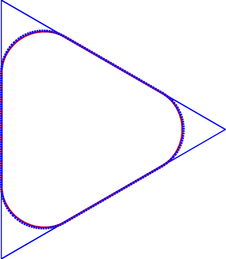 |
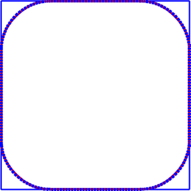 |
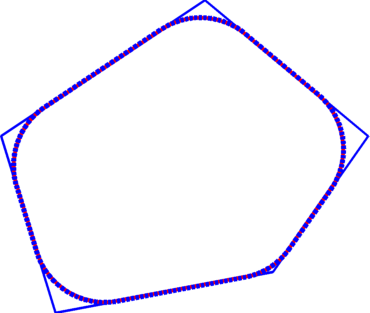 |
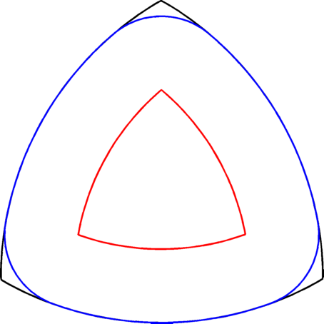 |
Cheeger set in equilateral triangle |
Cheeger set in square | General Cheeger set | Kawohl, Lachand-Robert algorithm - Reuleaux triangle. Approximation with a polygon with 402 vertices. |
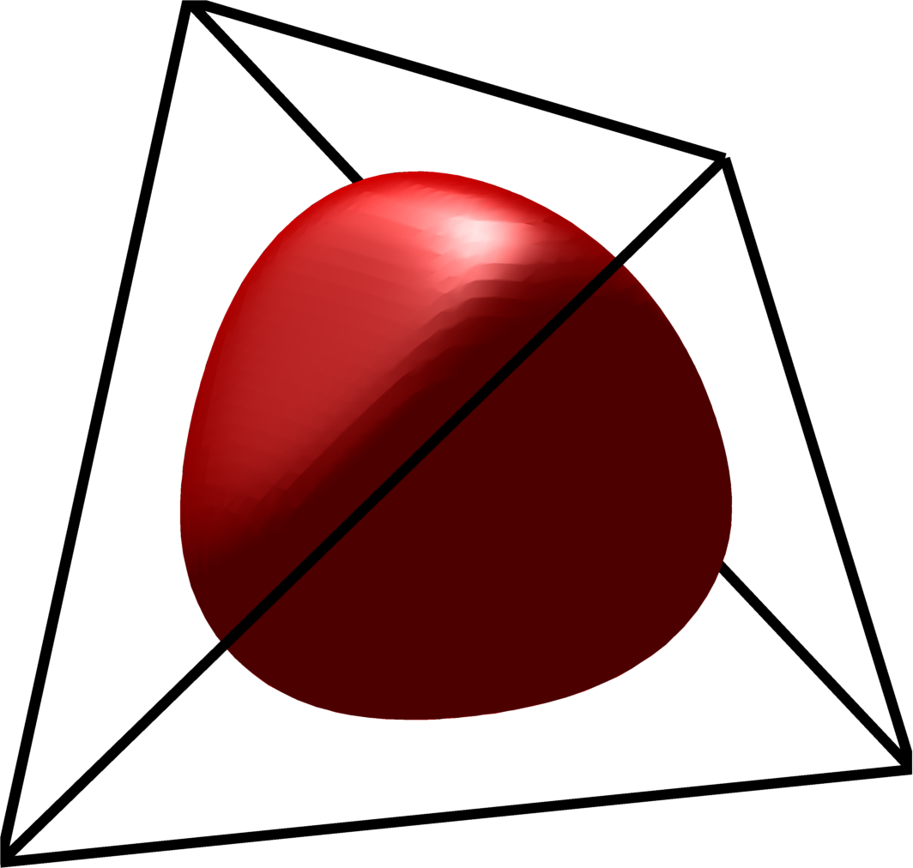 |
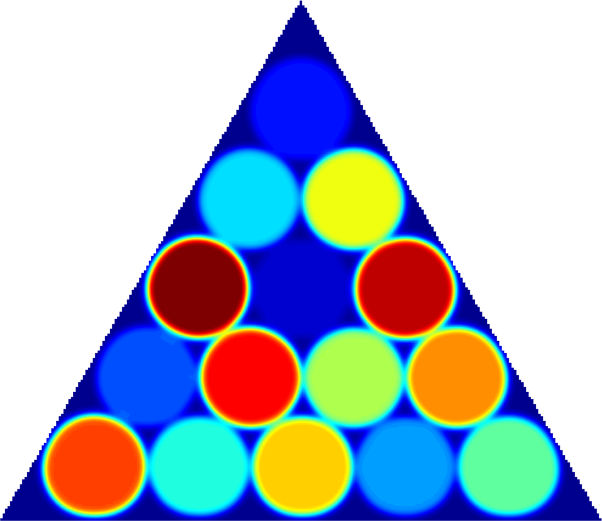 |
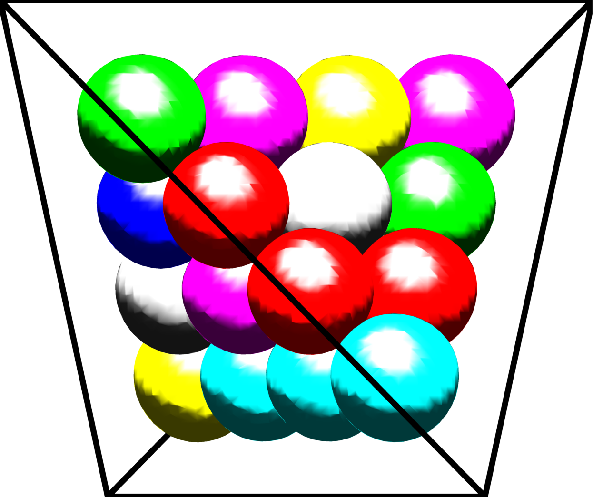 | |
Cheeger set in a tetrahedron |
Periodic optimal Cheeger cluster | Optimal packing of circles | Optimal packing of $20$ spheres in a tetrahedron |
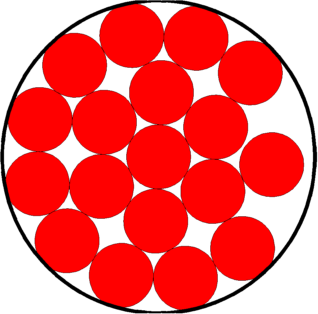 |
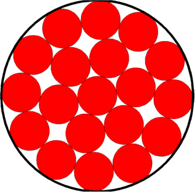 |
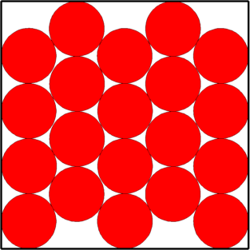 |
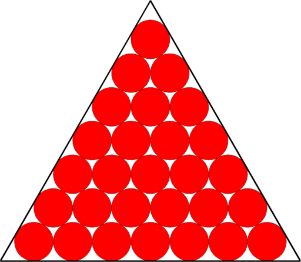 |
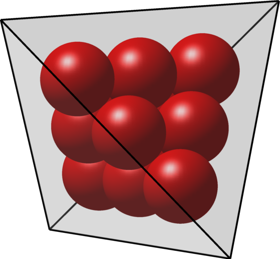 |
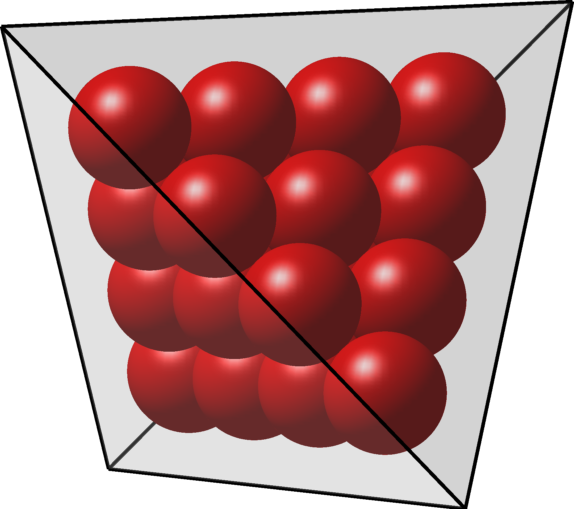 |
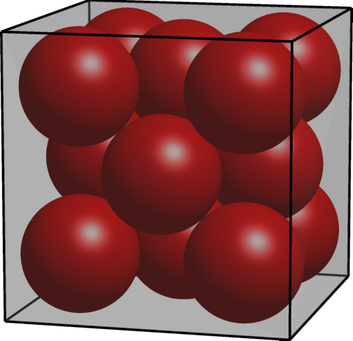 |
← Back to numerical computations
Created: March 2017, Last modified: March 2017